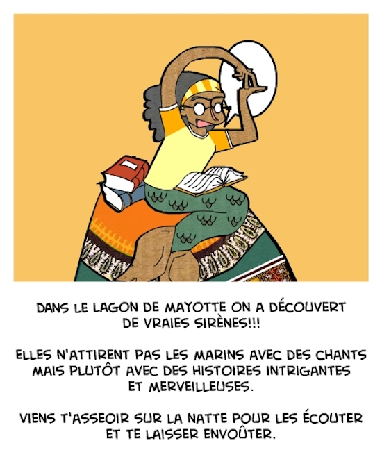

Les Sirènes de Mayotte (The Mermaids of Mayotte) is a 10 illustrated postcard set based on the idea of mermaids that captivate people with stories rather than with songs. This idea to promote reading came to me when I was living in the island of Mayotte which essence I also try to embody in this project.

The illustrations will be available soon.